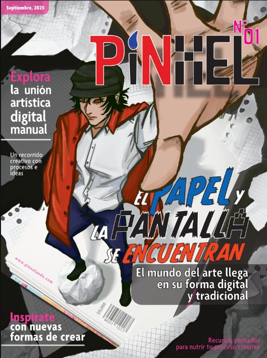

Diseño editorial
En este proyecto trabajé en el diseño editorial de portadas para revistas de ilustración, explorando la relación entre imagen, tipografía y composición. Busqué crear propuestas visualmente atractivas que destacaran las ilustraciones y transmitieran la identidad y personalidad de cada edición.
